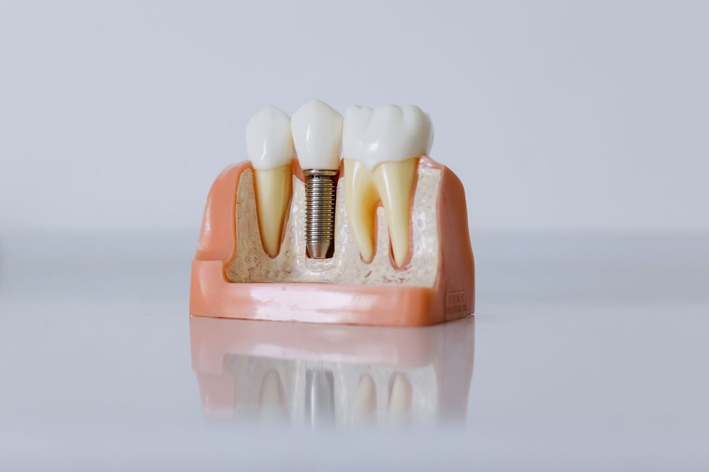
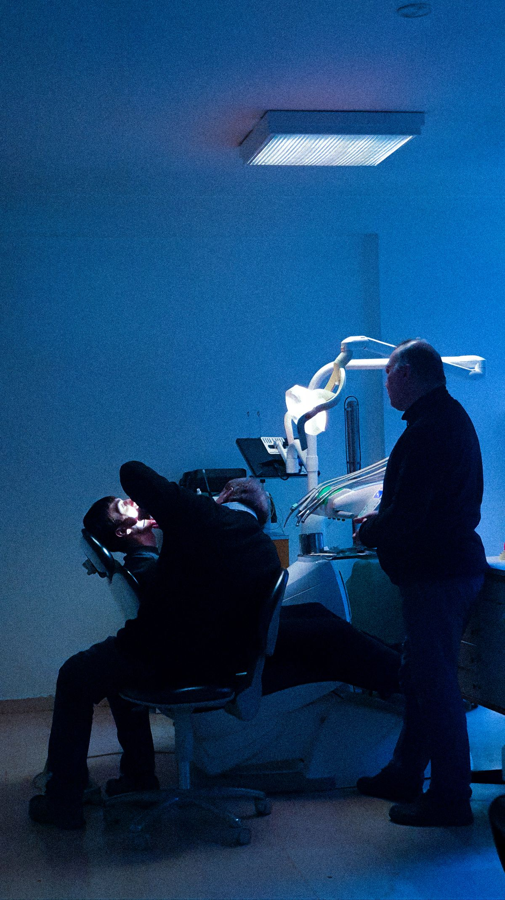
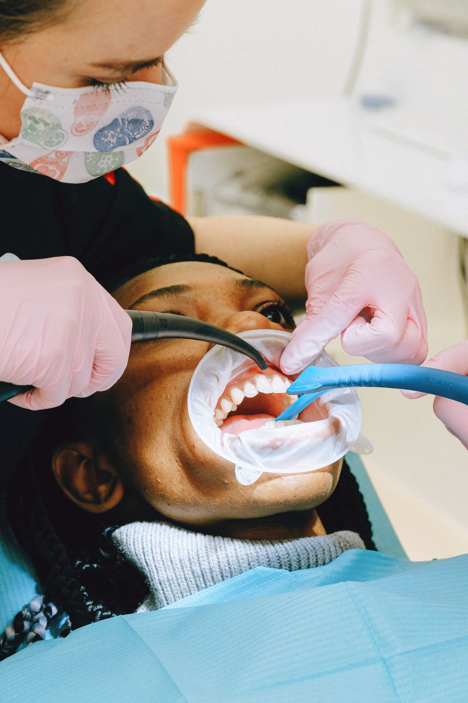
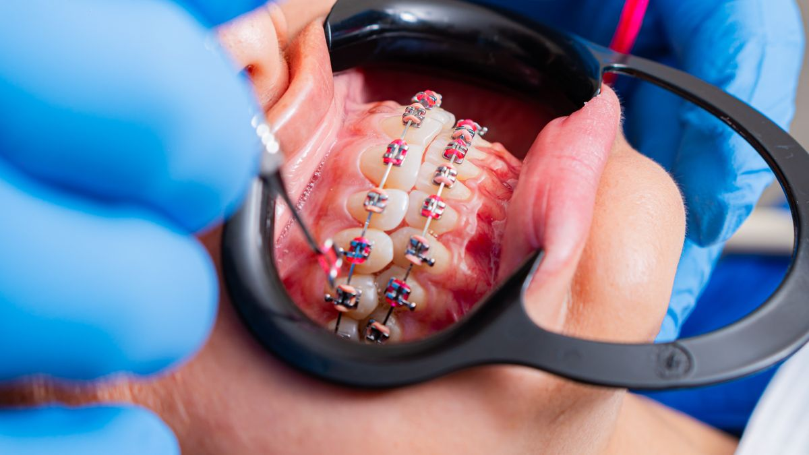
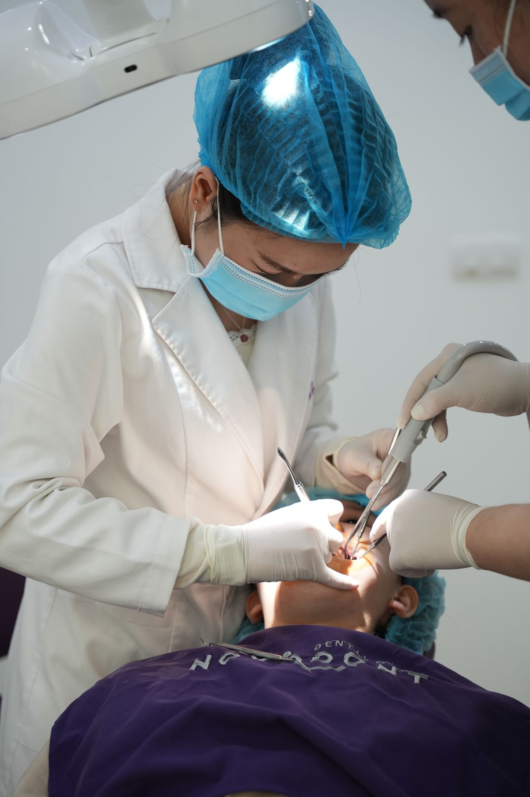
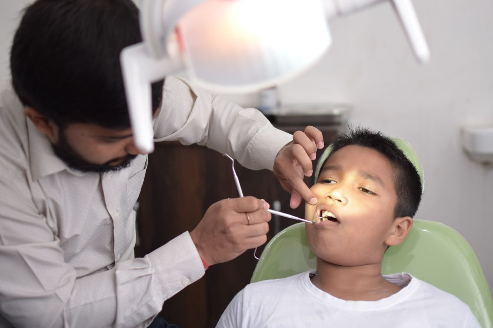
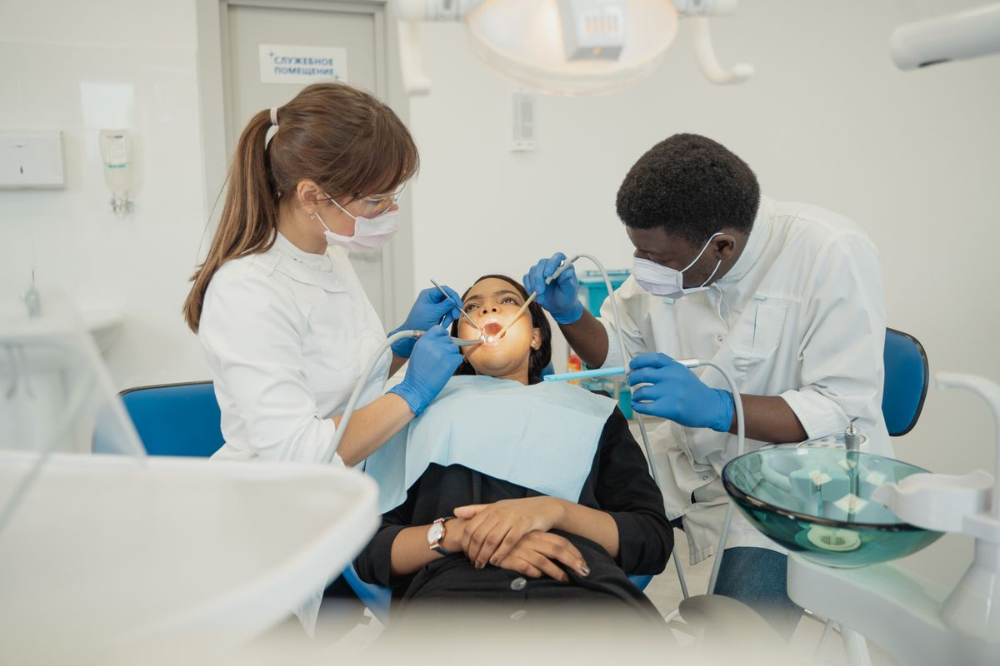

ایمپلنت دندان
جایگزین دائمی دندانهای از دسترفته؛ همراه با لیفت سینوس و پیوند استخوان در صورت نیاز — حوزه تخصصی دکتر ناصری با فلوشیپ ایمپلنت از کره جنوبی.
کلینیک دکتر سید رضا ناصری در میدان کاج سعادتآباد، با بیش از ۲۲ سال سابقه و فلوشیپ ایمپلنت و زیبایی از سئول، در بخشهای عمومی، تخصصی و اطفال — هر ساعت از شبانهروز که لازم باشد، در کنار شماست.

بخشهای عمومی، تخصصی و اطفال کلینیک دکتر ناصری در سعادتآباد، در تمام ساعات شبانهروز آماده ارائه خدماتاند.

جایگزین دائمی دندانهای از دسترفته؛ همراه با لیفت سینوس و پیوند استخوان در صورت نیاز — حوزه تخصصی دکتر ناصری با فلوشیپ ایمپلنت از کره جنوبی.

پوستههای ظریف سرامیکی برای اصلاح فرم، رنگ و فاصله دندانها؛ لبخندی یکدست و طبیعی، هماهنگ با چهره شما.

ترمیم و زیبایی دندانها با کامپوزیت همرنگ دندان؛ راهی سریع برای اصلاح لبپریدگی، فاصله و فرم دندانها.

مرتبسازی دندانها و اصلاح ناهنجاریهای فک و دندان، با روشهای ثابت و نامرئی برای کودکان و بزرگسالان.

درمان عفونت و درد ریشه برای حفظ دندان طبیعی شما؛ در کنار ترمیم و روکش، دندان دوباره مثل قبل قابل استفاده میشود.

بخش اطفال کلینیک؛ معاینه، ترمیم و درمان دندانهای شیری و دائمی کودکان در محیطی آرام و بدون استرس.

دکتر سید رضا ناصری، جراح و دندانپزشک، دانشآموخته دانشگاه علوم پزشکی تهران است و کلینیک ایشان در میدان کاج، سالهاست مرجع درمانهای عمومی، تخصصی و اطفال غرب تهران است.
در تمام ساعات شبانهروز و ایام تعطیل پذیرش دارید؛ برای دنداندرد نیمهشب، لازم نیست تا صبح صبر کنید.
دکتر ناصری بیش از دو دهه است که در همین منطقه و در محیطی آرام و کاملاً بهداشتی به شهروندان خدمت میکند.
دوره تخصصی فلوشیپ ایمپلنت و زیبایی در کره جنوبی زیر نظر پروفسور چانگ؛ ایمپلنت، لیفت سینوس و پیوند استخوان از دورههای تخصصی ایشان است.
بخشهای عمومی، تخصصی و اطفال در یک مجموعه؛ برای هر مرحله از درمان، نیازی به رفتوآمد بین چند مطب نیست.
از معاینه و بررسی عکس رادیوگرافی تا اجرای درمان؛ نگاهی به فضای کاری کلینیک.



آنلاین از همین سایت، تلفنی یا در دایرکت اینستاگرام — در هر ساعت از شبانهروز که لازم داشته باشید.
در جلسه اول دندانها کامل معاینه میشود و در صورت نیاز، عکس رادیوگرافی بررسی میشود.
مراحل درمان و تعداد جلسات، پیش از شروع به زبان ساده توضیح داده میشود و درمان طبق همان طرح انجام میشود.
بعد از درمان، نکات مراقبتی گفته میشود و برای کنترل نتیجه درمان، در کنار شما هستیم.
بله؛ کلینیک دکتر ناصری در سعادتآباد بهصورت شبانهروزی و در ایام تعطیل هم پذیرش دارد. برای مراجعه در ساعات نیمهشب، پیش از حرکت با شماره ۰۲۱۸۸۶۸۷۰۱۳ تماس بگیرید تا پذیرش شما هماهنگ شود.
سه راه دارید: فرم رزرو آنلاین همین صفحه، تماس با شماره ۰۲۱۸۸۶۸۷۰۱۳، یا ارسال پیام در دایرکت اینستاگرام کلینیک (dr.rezanaseri@). بعد از ثبت درخواست، برای هماهنگی ساعت دقیق با شما تماس میگیریم.
دکتر سید رضا ناصری دانشآموخته دندانپزشکی دانشگاه علوم پزشکی تهران است؛ دورههای ایمپلنت، لیفت سینوس، پیوند استخوان، جراحی لثه و زیبایی را با گواهینامه از مراکز علمی معتبر از جمله دانشگاههای علوم پزشکی تهران و شهید بهشتی گذرانده و فلوشیپ ایمپلنت و زیبایی را در سئول کره جنوبی، زیر نظر پروفسور چانگ، به پایان رسانده است.
تهران، سعادتآباد، میدان کاج، خیابان سرو شرقی، خیابان مجد — کلینیک شبانهروزی سعادتآباد (دکتر ناصری). شماره تماس کلینیک: ۰۲۱۸۸۶۸۷۰۱۳.
بله؛ کلینیک بخش اطفال دارد و خدمات دندانپزشکی کودکان در کنار بخشهای عمومی و تخصصی، در همان مجموعه ارائه میشود.
فرم را پر کن؛ برای هماهنگی ساعت مراجعه با تو تماس میگیریم. برای موارد فوری، مستقیم تماس بگیر:
۰۲۱ - ۸۸۶۸ ۷۰۱۳